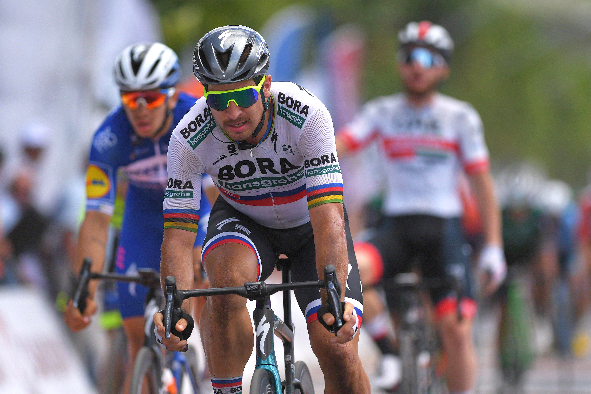

Peter Sagan

Bio
Peter Sagan (* 26. január 1990, Žilina) je slovenský profesionálny cestný cyklista jazdiaci za nemecký tím Bora-Hansgrohe.
Podľa odborníkov patrí medzi najväčšie talenty svetovej cyklistiky v súčasnosti.
Na konte má víťazné etapy na všetkých Grand Tours (12 Tour de France, 4 Vuelta Espaňa , 2 Giro d’Italia ).
Vyhral tiež jarné monumenty Paríž-Roubaix a Okolo Flámska a World Tour etapový pretek Okolo Poľska.
Na Tour de France (2012 – 2016) sa stal jediným pretekárom, ktorý získal zelené tričko vo svojich prvých piatich účastiach.
V rokoch 2013, 2015 a 2017 získal ocenenie slovenský Športovec roka.
V roku 2015 získal titul majstra sveta v cestnej cyklistike – preteky s hromadným štartom mužov v kategórií elite,
ktorý v roku 2016 obhájil v katarskej Dohe, ešte v roku 2016 pridal aj titul majstra Európy.
A v roku 2017 v nórskom Bergene skompletizoval zlatý hetrik. Od roku 2014 má sídlo v Monaku.
S médiami okrem slovenčiny komunikuje aj po anglicky a taliansky